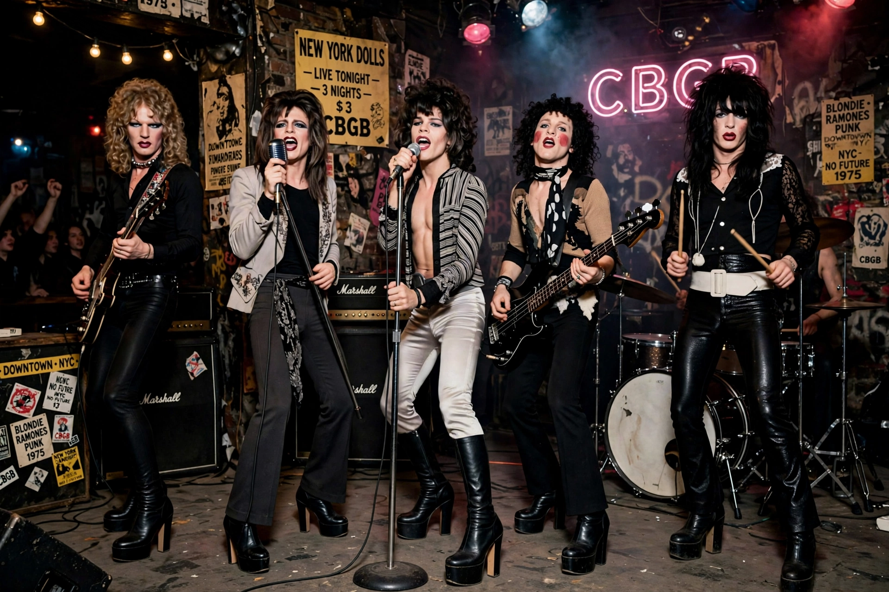

The New York Dolls were an American rock band formed in New York City in 1971. Although commercially unsuccessful at first, their raw, glam-influenced sound and trashy androgynous image made them a foundational proto-punk band.
Singer David Johansen, guitarists Johnny Thunders and Sylvain Sylvain, bassist Arthur "Killer" Kane and drummer Billy Murcia (later Jerry Nolan) played regularly at the Mercer Arts Center. Their debut album New York Dolls (1973), produced by Todd Rundgren, included "Personality Crisis", "Trash" and "Jet Boy". Too Much Too Soon (1974) followed. Drug problems, poor sales and a brief management period under Malcolm McLaren led to breakup by 1977.
The Dolls influenced punk, glam metal and alternative rock — members of the Sex Pistols, Ramones, Kiss and Morrissey (who ran their fan club and prompted a 2004 reunion) cited them. Johansen and Sylvain reformed the band in 2004, releasing further albums.